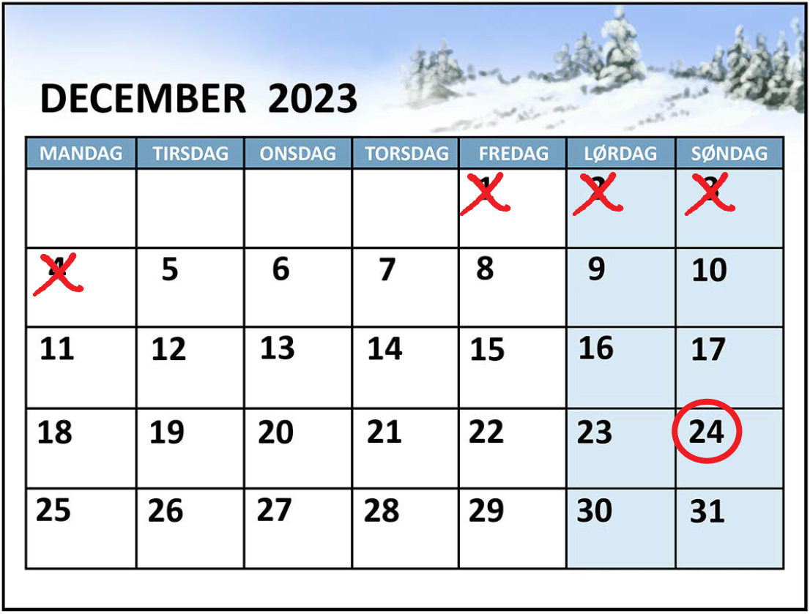
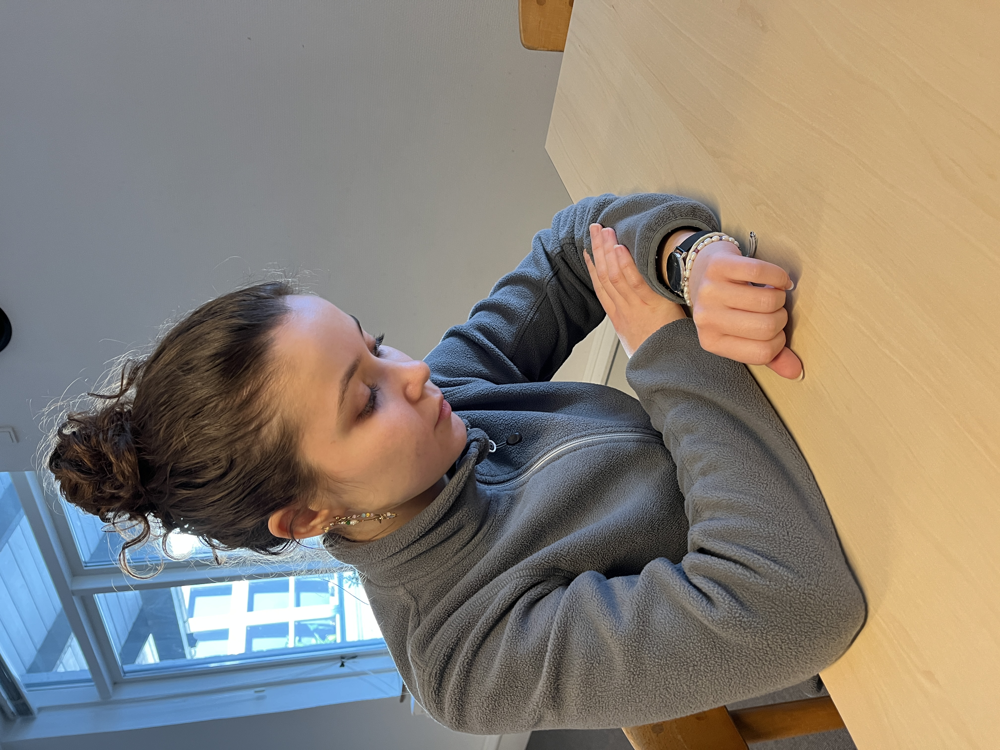
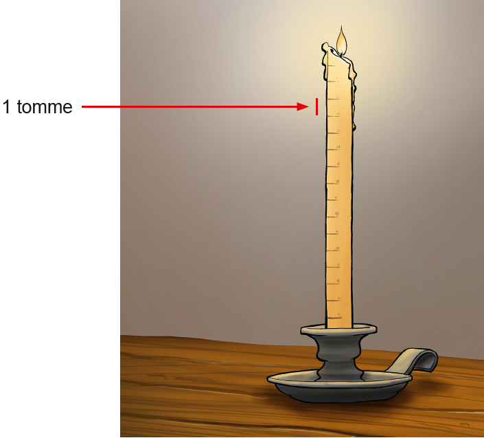
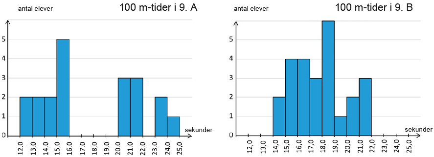
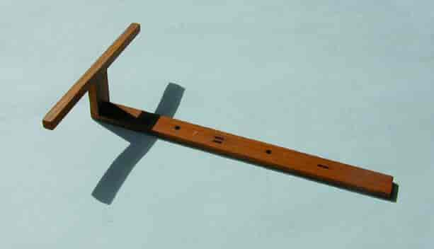
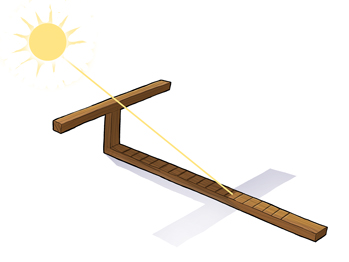
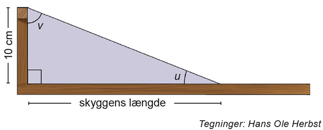
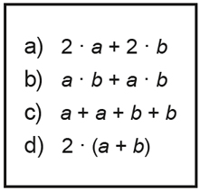
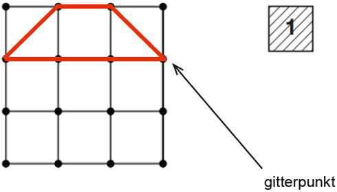
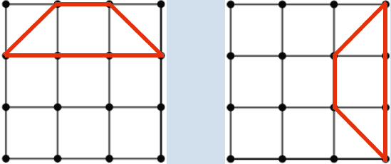

Matematik
Prøven med hjælpemidler
Opgaver og bilag
Prøven varer 3 timer (180 minutter)
Mandag den 4. december 2023
Kl. 10.00-13.00
Kl. 10.00-13.00
Kære elev
Prøven består af 7 opgaver. Du har 3 timer til at løse dem.
Ved hver opgave står der, hvor mange point den højst kan give.
Prøven kan i alt højst give 60 point. Du bestemmer selv, hvilken rækkefølge du laver opgaverne i, og hvor lang tid du vil bruge på hver af dem.
Det er vigtigt, at du begrunder dine svar i alle opgaver.
Det betyder, at du i hver opgave skal vise eller forklare, hvordan du er nået frem til dit svar. Du kan fx begrunde dit svar med tekst, beregninger og/eller tegninger.
En del af de point, du kan få i hver opgave, kommer fra dine begrundelser.
I de fleste opgaver kan du ikke få det højeste antal point, hvis du ikke begrunder dit svar, selv om dine resultater er rigtige.
I nogle af opgaverne skal du beregne et antal eller en størrelse. I andre opgaver skal du vise, hvordan du finder frem til et bestemt resultat eller afgøre, om en påstand er sand eller falsk.
Der er også opgaver, hvor du skal løse et matematisk problem ved at undersøge. I disse opgaver forventer vi ikke, at du på forhånd kender en metode, du kan bruge til at løse problemet. Ordet ’undersøg’ signalerer, at du selv skal finde på en god måde at løse problemet på ved at bruge matematik, du kender.
God arbejdslyst.
Styrelsen for Undervisning og Kvalitet
Prøven består af 7 opgaver. Du har 3 timer til at løse dem.
Ved hver opgave står der, hvor mange point den højst kan give.
Prøven kan i alt højst give 60 point. Du bestemmer selv, hvilken rækkefølge du laver opgaverne i, og hvor lang tid du vil bruge på hver af dem.
Det er vigtigt, at du begrunder dine svar i alle opgaver.
Det betyder, at du i hver opgave skal vise eller forklare, hvordan du er nået frem til dit svar. Du kan fx begrunde dit svar med tekst, beregninger og/eller tegninger.
En del af de point, du kan få i hver opgave, kommer fra dine begrundelser.
I de fleste opgaver kan du ikke få det højeste antal point, hvis du ikke begrunder dit svar, selv om dine resultater er rigtige.
I nogle af opgaverne skal du beregne et antal eller en størrelse. I andre opgaver skal du vise, hvordan du finder frem til et bestemt resultat eller afgøre, om en påstand er sand eller falsk.
Der er også opgaver, hvor du skal løse et matematisk problem ved at undersøge. I disse opgaver forventer vi ikke, at du på forhånd kender en metode, du kan bruge til at løse problemet. Ordet ’undersøg’ signalerer, at du selv skal finde på en god måde at løse problemet på ved at bruge matematik, du kender.
God arbejdslyst.
Styrelsen for Undervisning og Kvalitet
1
Ventetid til jul
Opgave 1 giver højst 9 point|
Annas lillebror glæder sig til jul. Han spørger, hvor mange timer, minutter og sekunder han skal vente.

Tegning: Hans Ole Herbst
Der er 20 døgn til juleaften. |
||
| 1.1 |
Hvor mange timer er der på 20 døgn?
|
|
| 1.2 |
Hvor mange sekunder er der på 1 time?
|
|
| 1.3 |
Hvor mange minutter er der på n timer?
Annas lillebror spørger også, hvor mange gange han skal trække vejret, før det er juleaften. |
|
| 1.4 |
Du skal vurdere, hvor mange gange en person cirka trækker vejret på 20 døgn. Du skal begrunde din vurdering med beregning.
|
|
2
Skole, søvn og fritid
Opgave 2 giver højst 10 point|
På et typisk døgn er Anna i skole i 7 timer, hun sover i 8 timer, og hun har 9 timers fritid.

Foto: Opgavekommissionen i matematik
|
||
| 2.1 |
Hvor stor en brøkdel af et typisk døgn udgør Annas fritid?
|
|
| 2.2 |
Tegn et diagram, der viser, hvor stor en del af et typisk døgn Anna bruger på at være i skole, sove og have fritid.
|
|
| 2.3 |
Forklar, hvorfor man kan skrive forholdet mellem den tid, Anna sover, og den tid, hun er vågen, som 1:2.
Forholdet mellem den tid, Annas mor sover, og den tid, hun er vågen, er typisk 1:3. Annas far sover lidt mere end Annas mor, men mindre end Anna. |
|
| 2.4 |
Giv et forslag til, hvordan forholdet kan være mellem den tid, Annas far sover, og den tid, han er vågen.
|
|
3
Vokslyset
Opgave 3 giver højst 6 point|
I 800-tallet målte den engelske kong Alfred tiden med et vokslys.
For hver tomme, lyset brændte, var der gået 20 minutter.

Tegning: Hans Ole Herbst
|
||||||||||||||||||
| 3.1 |
Du skal vise sammenhængen mellem antal tommer og antal minutter på tre forskellige måder:
|
|||||||||||||||||
4
100 m-løb
Opgave 4 giver højst 8 point|
Eleverne i 9. A og 9. B har løbet 100 m-løb. Diagrammerne viser fordelinger af elevernes tider fra løbet. De er fremstillet ud fra to hyppighedstabeller, som er på regnearket TID_DEC_2023.
Foto:
Opgavekommissionen i matematik

|
||
| 4.1 |
Hvor stor en procentdel af eleverne i 9. A løb de 100 m på 15,0 sek. eller mindre?
Gennemsnittet af tiderne i 9. A er 17,8 sek. |
|
| 4.2 |
Du skal vise med beregning, at gennemsnittet af tiderne i 9. B også er ca. 17,8 sek.
Du kan bruge regnearket. Eleverne i 9. A mener, at de samlet set er den bedste klasse til at løbe 100 m. Eleverne i 9. B mener derimod, at de samlet set er den bedste klasse. |
|
| 4.3 |
Skriv et argument, som 9. A kan bruge, og et argument, som 9. B kan bruge, til at forsvare hver deres mening.
|
|
5
Solur fra Egypten
Opgave 5 giver højst 11 point|
I oldtiden brugte man i Egypten et solur til at måle tiden med. Solens skygge på soluret viste forskellige tidspunkter på dagen.

Foto: Science Museerne, Aarhus Universitet
|
| Tegning 1 | Tegning 2 |
|  |  |
| Tegning 1 viser, hvordan man kan se solens skygge på soluret | Tegning 2 viser soluret set fra siden. Skyggens længde og solurets lodrette del danner en retvinklet trekant med en konstant højde på 10 cm og vinklerne u og v. |
|
Den retvinklede trekant på tegning 2 ændrer sig efter, hvor højt solen står på himlen.
|
||
| 5.1 |
Hvor stor er vinkel v, hvis vinkel u er 46°?
|
|
| 5.2 |
Hvor stor er skyggens længde, hvis vinkel v er 42°?
|
|
| 5.3 |
Forklar, hvordan man kan bruge tangens til at beregne skyggens længde, når man kender vinkel u.
I Egypten er der tidspunkter på året, hvor vinkel u bliver ca. 10° større for hver time mellem kl. 6 og 12. |
|
| 5.4 |
Undersøg, om skyggens længde ændrer sig lige meget fra time til time.
|
|
6
Omkreds af et rektangel
Opgave 6 giver højst 10 point|
Skitsen til højre viser et blåt rektangel med sidelængderne a og b. |
|||
| 6.1 |
Hvor stort er det blå rektangels omkreds, hvis a = 0,6 og b = 1,2?
Man kan bruge flere af udtrykkene i den sorte ramme til at beregne omkredsen af det blå rektangel. |
||
| 6.2 |
Forklar, hvilke af udtrykkene man kan bruge til at beregne omkredsen af det blå rektangel.
Skitsen til højre viser et rødt rektangel. De længste sider har sidelængden c. De korteste sider har længden c − 6. |
||
| 6.3 |
Hvilken værdi skal c have, hvis det røde rektangels længste side skal være dobbelt så stor som den korteste side?
|
||
| 6.4 |
Undersøg, hvilke værdier c kan have, hvis det røde rektangels omkreds skal være mindre end 24.
|
||
a |
|
| b |

c - 6 |
|
| c |
7
Firkanter med arealet 2
Opgave 7 giver højst 6 point|
Tegningen viser en rød firkant i et kvadratnet med 4 x 4 gitterpunkter. Firkanten har alle fire vinkelspidser i gitterpunkter, og firkantens areal er 2.  |
|||||||||||||
| 7.1 |
Undersøg, hvor mange andre firkanter med arealet 2, man kan tegne i et kvadratnet med 4 x 4 gitterpunkter. Firkanterne skal opfylde de tre betingelser i den blå ramme.
Du skal tegne dine løsninger, evt. på svararket.

|